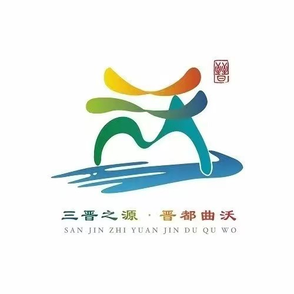
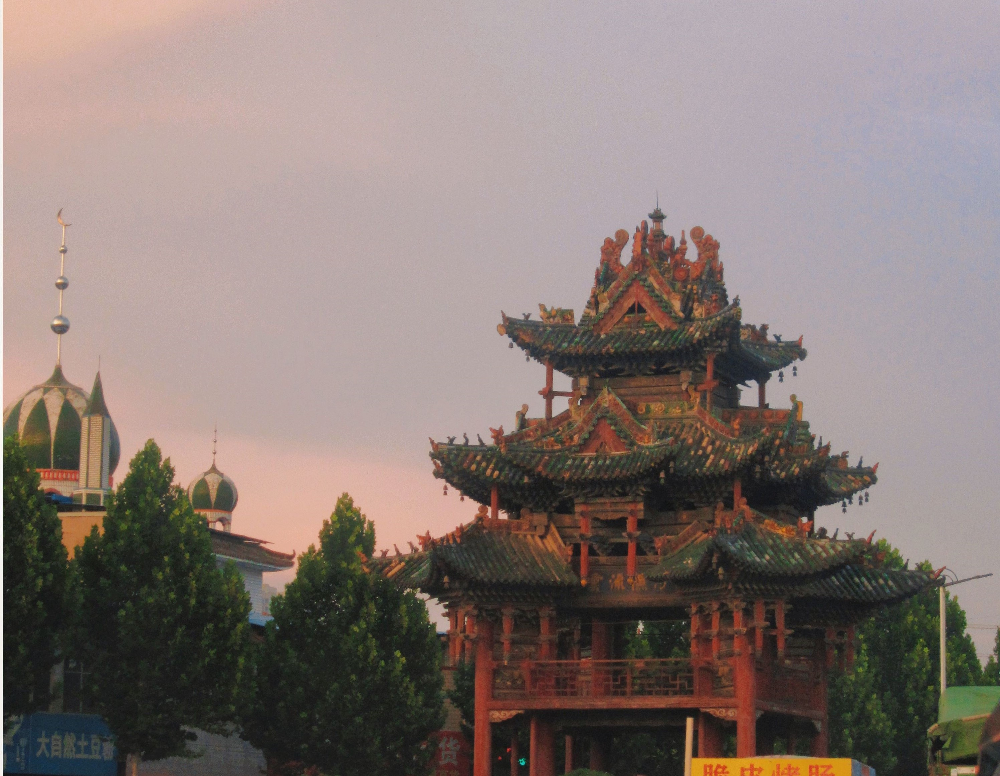

曲沃之名，始于西周初期。古晋国以绛山为宗，绛水（今沸泉）出绛山之南，沸涌而东，折向北经青玉峡，东流白石山，悬而为沃泉（今景明瀑布），九曲而
北入于浍，萦回盘旋，西流入汾。取其曲，取其沃，得名曲沃。据《读修曲沃县志》，因古曲沃城为名，古曲沃得名于境有沃水并萦回盘旋，是为曲沃命名之由。曲沃县地处晋、陕、豫黄河金三角枢纽区域，背靠京津唐、面向环渤海，呈望北向南、承东启西之势，古时便是工商发达、商贸流通之地。
中国地名文化遗产“千年古县”、中国成语典故之乡、中国成语典故传承基地、中国文化百强县、全国休闲农业和乡村旅游示范县、中国华侨国际文化交流基地
、全国休闲农业和乡村旅游示范县、国家农产品质量安全县、全国农村一二三产业融合发展先导区、全国农村创业创新典型县范例、全国商品粮基地县、全国蔬菜重点县、全国农技推广示范县、全国小麦高产创建示范县、全国小麦科技入户示范县、全国基层中医药工作先进县、全国特教先进县、全国社会治安综合治理先进县等30余张国字号名片。北入于浍，萦回盘旋，西流入汾。取其曲，取其沃，得名曲沃。据《读修曲沃县志》，因古曲沃城为名，古曲沃得名于境有沃水并萦回盘旋，是为曲沃命名之由。改革开放力度加大，民生得到有效保障，打赢了高水平全面建设小康社会“收官战”，实现了“十四五”良好开局
北入于浍，萦回盘旋，西流入汾。取其曲，取其沃，得名曲沃。据《读修曲沃县志》，因古曲沃城为名，古曲沃得名于境有沃水并萦回盘旋，是为曲沃命名之由。